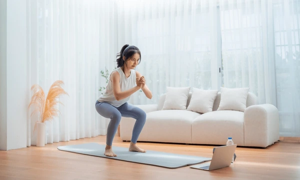
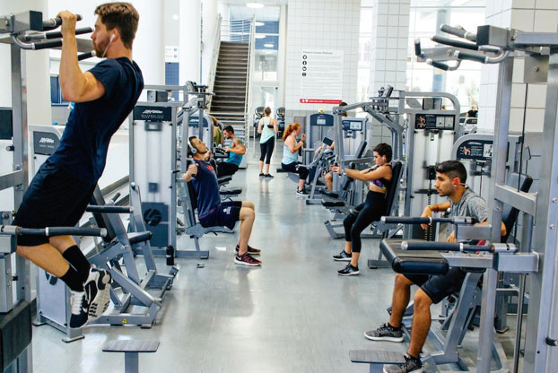
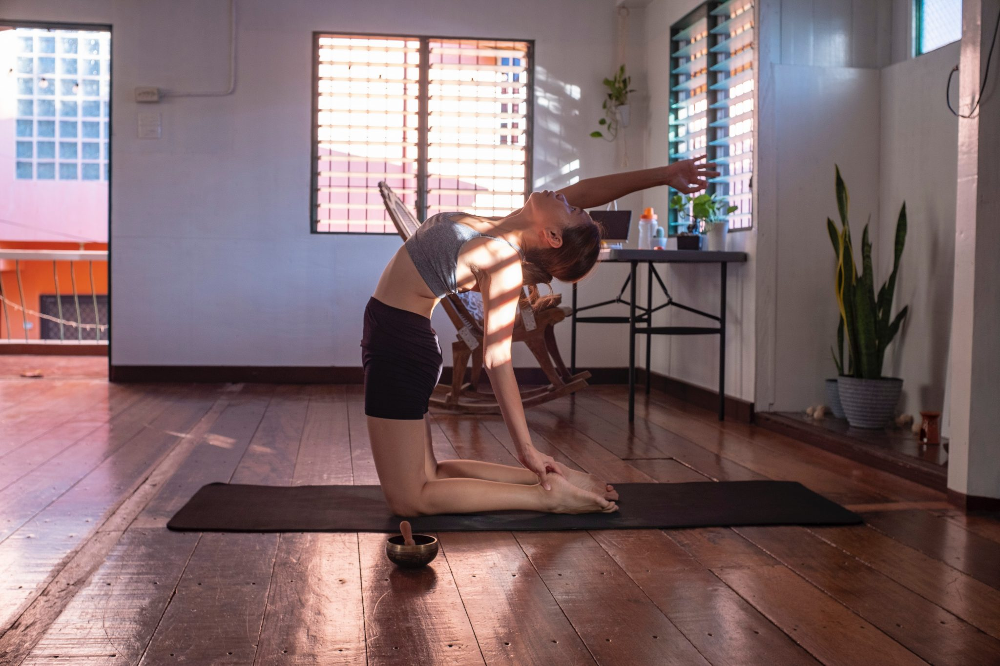

No-Equipment: 25-Minute Leg Circuit
A focused lower-body session that fits a busy schedule. Warm up fast, then build strength and stability with squats, forward-to-reverse lunges, and single-leg reaches, finishing with a wall sit and a short breath reset. No equipment, low noise, dorm-friendly.
- Warm-up (1 min)： march 30s · arm circles 15s/side · 6 neck look-left/right.
- Round 1 (12 min): Do each move 40s work, 20s rest · Classic Squats · Forward to Reverse Lunges · Single-Leg Squat Reach · Step-Ups · Split Jumps → Skaters → Wall Sit (45–60s).
- Round 2 (8 min): Repeat the same six movements (skip wall sit), 40s on / 15s off.
- Finisher (4 min): Wall sit 45–60s, rest 30s; repeat 2 sets.
Pro tip: Keep knees tracking over the second toe and move quietly to stay dorm-friendly.
Start this workout
Campus Gym: 3-Day PPL for Beginners
Learn a simple push–pull–legs split you can run on busy weeks. Each day trains major muscle groups with 5–6 proven lifts, light warm-ups, and short rest. Track weights, keep form clean, and add a little each week.
- Day 1 · Push: DB bench · incline press · shoulder press · lateral raise · triceps.
- Day 2 · Pull: Pull-ups/lat pulldown · row · face pull/shrug · curls.
- Day 3 · Legs: Squat/leg press · Romanian deadlift · lunges · calves · core.

Yoga & Stretch: Study-Shoulders Relief
Sitting long hours? This gentle flow loosens neck, shoulders, and hips. Move slowly, match breath to motion, and finish clearer than you started. Great before bed or during afternoon slump.
- Cat–Cow *5 → Downward-Facing Dog (5 breaths)
- Low lunge with twist *2/side
- Thread the Needle *3/side
- Seated forward fold 30s + box breathing 4-4-6 *2